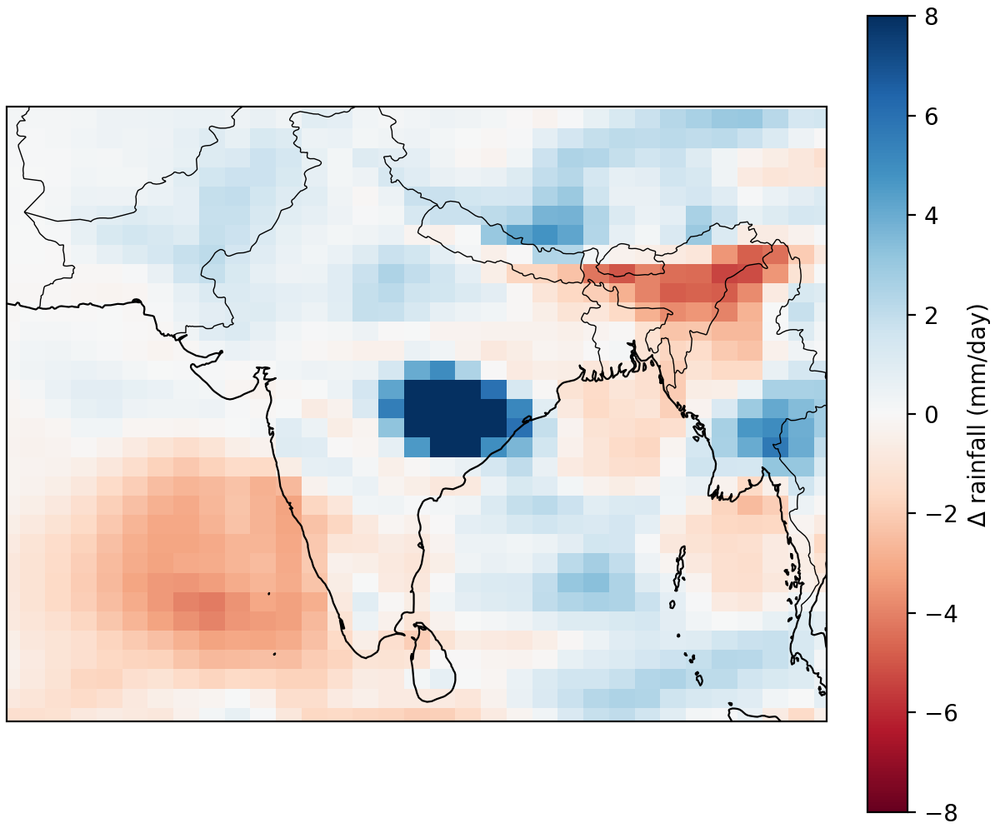
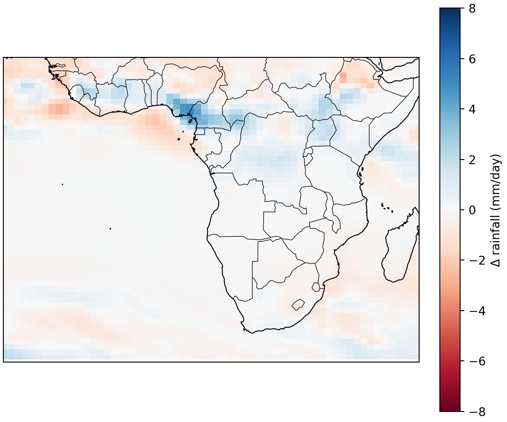
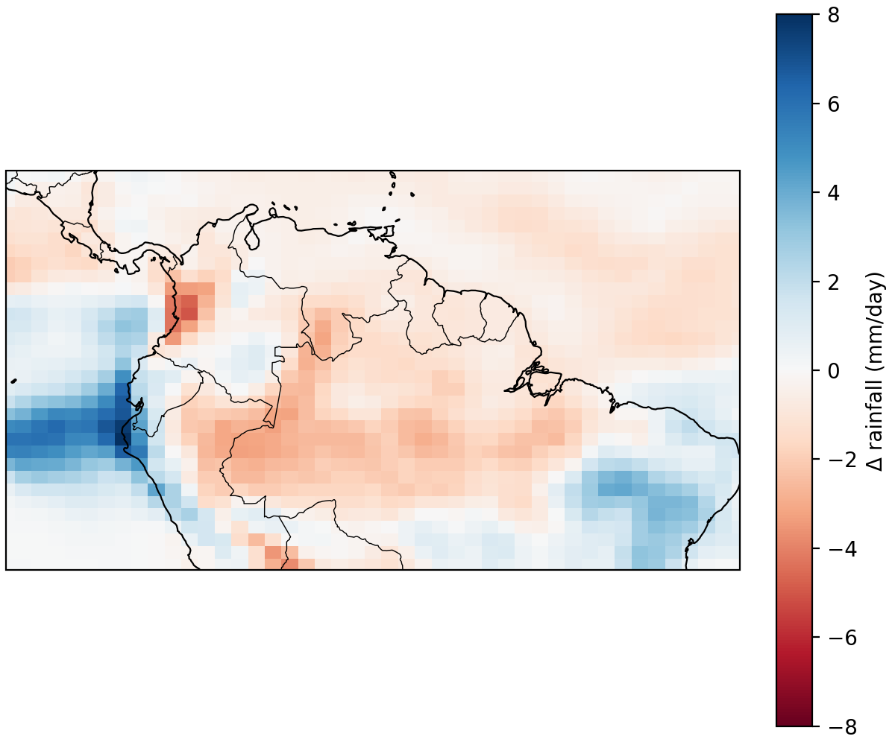

Indian Summer Monsoon
ISM rainfall frame
West African Monsoon
WAM rainfall frame
South American Monsoon
SAMS rainfall frame
How climate change shifts the rainfall rhythms of billions.
Monsoons are seasonal wind and rainfall patterns that bring life-sustaining rains to large parts of the world.
Each summer, moist winds rush inland from the Indian Ocean, bringing intense rains to South Asia between about 5°N and 35°N, from 60°E to 100°E.
Over West Africa, the monsoon delivers rainfall to the Sahel, from roughly 5°N to 20°N and 20°W to 20°E, sustaining crops and river systems.
In South America, the monsoon system spans the Amazon and central Brazil, between about 5°N and 25°S, and 70°W to 35°W, shaping one of the world’s largest rainforest regions.
West African Monsoon (WAM) clearly stands out as the wettest of the three regions, with substantially higher average rainfall across its season. In all three systems, the peak rainfall is concentrated in a relatively fixed window of the year, showing that while climate change affects intensity and totals, the seasonal timing of these monsoons remains fairly consistent. The graph shows the average precipitation in millimeters (mm) of days with rainfall. You can also click any colored dot in the legend to isolate that monsoon on the radial plot and see its pattern without the others.
The maps below show how average rainfall is distributed across each major monsoon region during peak monsoon months.
Looking only at the seasonal cycle hides deeper changes in rainfall distribution, intensity, and variability across monsoon regions. As the decades animate, notice how areas of heaviest rainfall expand, retreat, or shift location, even when monsoon timing itself remains relatively stable.
ISM rainfall frame
WAM rainfall frame
SAMS rainfall frame
Together, these patterns reveal a common theme: monsoons keep arriving on time, but rainfall redistributes, becoming more concentrated, uneven, and unpredictable across landscapes.
Watching each season unfold reveals how monsoon rains move year to year, but it masks the deeper pattern.
When we compare the late 20th century to the end of this century,
we can see where rainfall is truly redistributing.
These maps show the net change in seasonal rainfall, highlighting where monsoon regions become wetter (blue)
or drier (red) between the 1990s and the 2100s.
Looking only at the seasonal cycle hides deeper changes in where rain actually falls. These maps compare the future seasonal mean rainfall in the 2100s to the late-20th-century 1990s for each monsoon region (red = wetter, blue = drier), revealing how the same monsoon can both intensify in some places and weaken in others.

Across South Asia, the future monsoon shows a stark contrast: northern and northeastern regions become consistently wetter, while parts of central and southern India experience declining seasonal rainfall. This spatial imbalance suggests a growing risk of flash flooding near the Himalayan foothills alongside increasing drought stress in agricultural heartlands farther south, making water management more uneven across the subcontinent.

In West Africa, large inland regions, particularly across the Sahel and southern interior, show widespread drying compared to the late 20th century. Although some coastal areas see modest increases in rainfall, the overall seasonal pattern reveals a weakening of inland monsoon penetration, raising concerns for agriculture and long-term food security across the region.

The South American monsoon displays a complex split: wetter conditions strengthen along the northwestern Amazon and coastal tropics, while large portions of the central and southern basin dry out. This redistribution of rainfall threatens rainforest moisture stability and increases fire vulnerability across Brazil’s interior , potentially amplifying ecosystem stress in one of Earth’s most critical carbon and biodiversity regions.
So, where should we start?
Select a monsoon to follow how rainfall changes interact with different land covers – forests, grasslands, and croplands – and what kinds of local solutions might help.
1. What have you done so far? So far, we have created the landing page of our project website, which has rain animation that reflects our monsoon topic. We also have created the next part, where we introduce what is a monsoon and the three specific monsoons we will focus on. We have implemented a rotating globe, in which when you click on each monsoon explanation section, the globe will rotate to the center of the monsoon. We have also created a radial plot of historic precipitation every month for years 1995~2014 to show how monsoons normally behave. Additionally, we created an interactive infographic showing deaths related to effects of changing monsoons across the 3 largest countries in each region. Finally, we added some of the research we did on why focusing on monsoon patterns matter.
2. What will be the most challenging of your project to design and why? We believe the most challenging part of our project is to create three of everything because we are focusing on three major monsoons. Specifically, at the very end of the website we plan to have a world map with all the data, similar to our project 3. However, unlike project 3 where it did not zoom in, we are going to create a zoom in feature for all three of the monsoons and compare two SSPs. This requires a lot of data and involves a lot of interactive elements, which we believe will be the most challenging.
Eekhout, J., Hunink, J., Terink, W., & de Vente, J. (2018). Why increased extreme precipitation under climate change negatively affects water security. Hydrology and Earth System Sciences, 22(11), 5935–5946. doi.org
Gao, D., Chen, A., Marthews, T., & Memon, F. (2024). Evaluating future hydrological changes in China under climate change [Preprint]. doi.org
National Aeronautics and Space Administration. (n.d.). How does climate change affect precipitation? NASA Global Precipitation Measurement Mission. gpm.nasa.gov
Qing, Y., Wang, S., Yang, Z.-L., & Gentine, P. (2023). Soil moisture–atmosphere feedbacks have triggered the shifts from drought to pluvial conditions since 1980. Communications Earth & Environment, 4(1), 1–11. doi.org
Turner, S., Chevuturi, A., Chan, W., Barker, L. J., Tanguy, M., Parry, S., & Allen, S. (2025). Have river flow droughts become more severe? A review of the evidence from the UK. Hydrology and Earth System Sciences, 29(19), 4371–4394. doi.org
Wang, X.-Y., Bao, X.-Y., Huang, Y., Li, Z.-W., Yong, J.-H., Wu, Y.-P., Feng, G.-L., & Sun, G.-Q. (2023). Physical explanation for paradoxical climate change in semi-arid inland Eurasia. Atmosphere, 14(2), 376. doi.org
Xiong, J., Guo, S., Abhishek, A., Chen, J., & Yin, J. (2022). Global evaluation of the “dry gets drier, and wet gets wetter” paradigm. Hydrology and Earth System Sciences, 26(24), 6457–6476. doi.org
World Bank Group. (n.d.). India - Historical natural disasters. Climate Change Knowledge Portal.
World Bank Group. (n.d.). Pakistan - Historical natural disasters. Climate Change Knowledge Portal.
World Bank Group. (n.d.). Bangladesh - Historical natural disasters. Climate Change Knowledge Portal.
World Bank Group. (n.d.). Brazil - Historical natural disasters. Climate Change Knowledge Portal.
World Bank Group. (n.d.). Argentina - Historical natural disasters. Climate Change Knowledge Portal.
World Bank Group. (n.d.). Colombia - Historical natural disasters. Climate Change Knowledge Portal.
World Bank Group. (n.d.). Nigeria - Historical natural disasters. Climate Change Knowledge Portal.
World Bank Group. (n.d.). Ghana - Historical natural disasters. Climate Change Knowledge Portal.
World Bank Group. (n.d.). Cote d'Ivoire - Historical natural disasters. Climate Change Knowledge Portal.